Влияние ориентации намагниченности постоянных магнитов транслятора линейного электрогенератора на его характеристики
1. Введение
Преобразование механической энергии источника с возвратно-поступательным движением в электрическую выгоднее и удобнее производить с помощью линейных электрогенераторов, в которых магнитное поле возбуждения создают постоянные магниты (ПМ), расположенные на трансляторе (подвижная часть линейного электрогенератора – аналог ротора) с чередующейся полярностью [10]. Упрощенная схема однофазного линейного электрогенератора с транслятором на ПМ показана на рис. 1.1. Линейный электрический генератор с транслятором на ПМ можно, в принципе, рассматривать как пространственную трансформацию обычного электрогенератора с вращающимся ротором на ПМ [3, 5].
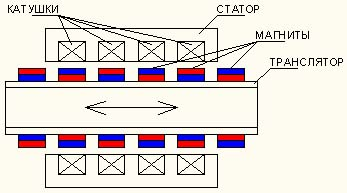
Рис. 1.1. Схема однофазного линейного электрогенератора с транслятором на ПМ.
Направление намагниченности ПМ, устанавливаемых на трансляторе линейного электрогенератора, может по отношению к осям транслятора (электрогенератора) быть либо радиальным (рис. 1.2), либо аксиальным (рис. 1.3), либо смешанным - в виде сборки Холбаха [Halbach, 4] (рис. 1.3).
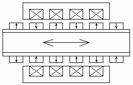
Рис. 1.2. Схема однофазного линейного электрогенератора с транслятором на ПМ с радиальным направлением намагниченности. ПМ устанавливаются на магнитопроводящем основании. Соседние магниты имеют противоположную полярность.
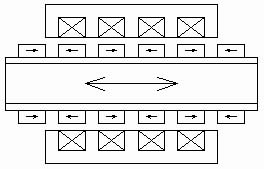
Рис. 1.3. Схема однофазного линейного электрогенератора с транслятором на ПМ с аксиальным направлением намагниченности. ПМ устанавливаются на немагнитном основании. Соседние магниты имеют противоположную полярность.
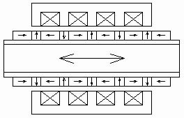
Рис. 1.4. Схема однофазного линейного электрогенератора с транслятором на ПМ в виде сборки Холбаха. ПМ устанавливаются на немагнитном основании. Соседние магниты имеют разную ориентацию намагниченности, полярность магнитов с одной ориентацией намагниченности чередуется.
По поводу эффективности выбора ориентации намагниченности ПМ транслятора существуют различные мнения [2, 6, 7], поэтому были сделаны расчеты для разных схем в предположении использования магнитов сходных типоразмеров в заданном количестве.
2. Общие соображения
В соответствии с законом электромагнитной индукции Фарадея [8] при изменении потокосцепления Y магнитного поля и катушки во времени t в катушке возникает электродвижущая сила (ЭДС) E(t):

Это соотношение может быть преобразовано к виду:

где z – координата вдоль оси линейного электрогенератора, dz/dt – скорость движения транслятора электрогенератора (рис. 2.1).

Рис. 2.1. Схема для расчета ЭДС линейного однофазного электрогенератора. В начальном положении z = 0 зубец статора находится напротив магнитного полюса транслятора. Потокосцепление катушек статора с магнитным полем максимально.
Пусть потокосцепление катушки меняется по гармоническому закону:

где AM – расстояние между соседними магнитными полюсами транслятора (в начальном положении z = 0 магнитный полюс транслятора находится напротив зубца статора, обеспечивая максимальное потокосцепление с катушками, длина транслятора достаточно большая, чтобы не учитывать эффекты краев, рис. 2.1). Т. е. когда транслятора находится в точке z = 0 потокосцепление равно Y0, при смещении транслятора на z = AM потокосцепление становится равным –Y0, т. к. полярность соседнего магнита противоположна. Тогда:
Если движение транслятора происходит в диапазоне [-z0, z0] по гармоническому закону с амплитудой z0 относительно центрального положения z = 0 и частотой F:

то скорость транслятора dz/dt определяется выражением:
А ЭДС, как функция времени:

Амплитуда ЭДС E0 определяется соотношением:

Определяющее выходную мощность электрогенератора действующее значение ЭДС равно примерно половине ее амплитудного значения [10], которое при прочих равных условиях пропорционально амплитудному значению потокосцепления катушки Y0 с возбуждающим магнитным полем транслятора. Потокосцепление, в свою очередь, при неизменном числе витков катушки N зависит от охватывающего ее магнитного потока. То есть чем больше будет амплитудное значение магнитного потока F0, охватывающего катушку при остальных неизменных условиях, тем больше будет выходная мощность электрогенератора.
3. Транслятор на ПМ с радиальным направлением намагниченности
Расчет магнитного поля в магнитной системе линейного электрогенератора с транслятором на радиально намагниченных ПМ выполнен методом конечных элементов [1, 11] в приближении двумерной осесимметричной модели при отсутствии тока в обмотках (холостой ход). Расчетная модель электрогенератора показана на рис. 3.1, 3.2. Транслятор генератора состоит из центрального стального штока, на который надеты кольцевые постоянные магниты. Типоразмер магнитов К30х20х20, материал – неодим-железо-бор, намагниченность по радиусу, остаточная индукция 1.15 Тл, коэрцитивная сила по намагниченности 850 кА/м [9], магнитная проницаемость 1.05. Смежные магниты имеют противоположное направление намагниченности. Статор сделан из стали. Воздушный зазор между транслятором и статором 1 мм. Магнитные свойства стали, использованные для расчета, показаны на рис. 3.3 (магнитные свойства аналогичны марке 1010 или Ст10).
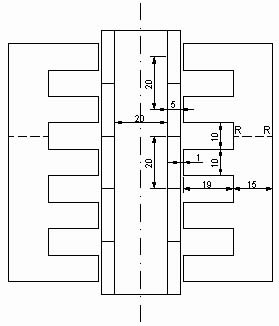
Рис. 3.1. Модель линейного однофазного электрогенератора с транслятором на радиально намагниченных ПМ для расчета магнитного потока. На цилиндрическом ферромагнитном (стальном) штоке диаметром 20 мм с шагом 20 мм крепятся магнитные кольца типоразмера К30х20х20 (внешний диаметр 30 мм, диаметр отверстия 20 мм, высота 20 мм). Воздушный зазор между транслятором и статором 1 мм. Зубцы и пазы статора имеют ширину по 10 мм и расположены с шагом 20 мм. Магнитный поток рассчитывается во внешнем ярме статора (через кольцевое сечение R - R).
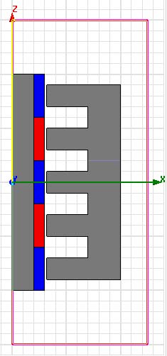
Рис. 3.2. Двумерная осесимметричная модель линейного однофазного электрогенератора с транслятором на радиально намагниченных ПМ для расчета магнитного потока методом конечных элементов в программе Ansoft Maxwell [1]. Шаг сетки 5 мм. Цилиндрический шток и статор выполнены из стали (марка 1010 или Ст10). ПМ состава Nd-Fe-B имеют остаточную индукцию 1.15 Тл, коэрцитивную силу по намагниченности 850 кА/м, магнитную проницаемость 1.05.
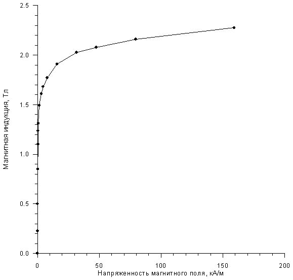
Рис. 3.3. Магнитные свойства стали для расчета магнитной системы линейного электрогенератора.
Распределение магнитного поля в магнитной системе линейного электрогенератора с транслятором на радиально намагниченных ПМ показано на рис. 3.4.
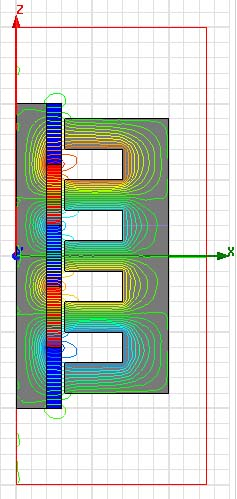
Рис. 3.4. Распределение магнитного поля в магнитной системе линейного электрогенератора с транслятором на радиально намагниченных ПМ на холостом ходу.
Магнитный поток в заданном сечении рассчитан с помощью калькулятора программы Ansoft Maxwell (Input - Quantity - B - Geometry - Line - Vector - Normal - Integral - RZ - Eval). Рассчитанное значение магнитного потока в кольцевом сечении внешнего ярма статора (R - R) 457.8 мкВб.
4. Транслятор на ПМ с аксиальным направлением намагниченности
Расчет магнитного поля в магнитной системе линейного электрогенератора с транслятором на аксиально намагниченных ПМ выполнен методом конечных элементов [1, 11] в приближении двумерной осесимметричной модели при отсутствии тока в обмотках (холостой ход). Расчетная модель электрогенератора показана на рис. 4.1, 4.2. Транслятор генератора состоит из центрального немагнитного штока, на который надеты кольцевые постоянные магниты. Типоразмер магнитов К30х20х20, материал – неодим-железо-бор, намагниченность по оси, остаточная индукция 1.15 Тл, коэрцитивная сила по намагниченности 850 кА/м [9], магнитная проницаемость 1.05. Смежные магниты имеют противоположное направление намагниченности. Статор сделан из стали. Воздушный зазор между транслятором и статором 1 мм. Магнитные свойства стали, использованные для расчета, показаны на рис. 3.3 (магнитные свойства аналогичны марке 1010 или Ст10).
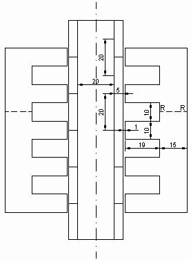
Рис. 4.1. Схема линейного однофазного электрогенератора с транслятором на аксиально намагниченных ПМ для расчета магнитного потока. На цилиндрическом немагнитном штоке диаметром 20 мм с шагом 20 мм крепятся магнитные кольца типоразмера К30х20х20 (внешний диаметр 30 мм, диаметр отверстия 20 мм, высота 20 мм). Воздушный зазор между транслятором и статором 1 мм. Зубцы и пазы статора имеют ширину по 10 мм и расположены с шагом 20 мм. Магнитный поток рассчитывается во внешнем ярме статора (через кольцевое сечение R - R).
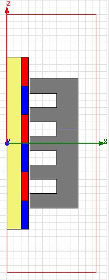
Рис. 4.2. Двумерная осесимметричная модель линейного однофазного электрогенератора с транслятором на аксиально намагниченных ПМ для расчета магнитного потока методом конечных элементов в программе Ansoft Maxwell [1]. Шаг сетки 5 мм. Цилиндрический шток немагнитный. Статор выполнен из стали (марка 1010 или Ст10). ПМ состава Nd-Fe-B имеют остаточную индукцию 1.15 Тл, коэрцитивную силу по намагниченности 850 кА/м, магнитную проницаемость 1.05.
Распределение магнитного поля в магнитной системе линейного электрогенератора с транслятором на аксиально намагниченных ПМ показано на рис. 4.3.
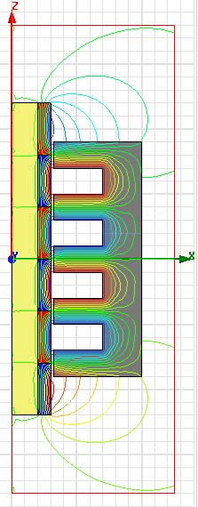
Рис. 4.3. Распределение магнитного поля в магнитной системе линейного электрогенератора с транслятором на аксиально намагниченных ПМ на холостом ходу.
Магнитный поток в заданном сечении рассчитан с помощью калькулятора программы Ansoft Maxwell (Input - Quantity - B - Geometry - Line - Vector - Normal - Integral - RZ - Eval). Рассчитанное значение магнитного потока в кольцевом сечении внешнего ярма статора (R - R) 312.3 мкВб меньше, чем для схемы с радиально намагниченными магнитами.
Попробуем уменьшить высоту магнитов до 10 мм и сделать между ними стальные вставки высотой 10 мм (рис. 4.4, рис. 4.5).
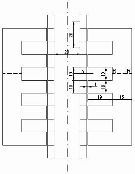
Рис. 4.4. Схема линейного однофазного электрогенератора с транслятором на аксиально намагниченных ПМ для расчета магнитного потока. На цилиндрическом немагнитном штоке диаметром 20 мм с шагом 20 мм крепятся магнитные кольца типоразмера К30х20х10 (внешний диаметр 30 мм, диаметр отверстия 20 мм, высота 10 мм). Между магнитами ставятся стальные вставки аналогичного типоразмера. Воздушный зазор между транслятором и статором 1 мм. Зубцы и пазы статора имеют ширину по 10 мм и расположены с шагом 20 мм. Магнитный поток рассчитывается во внешнем ярме статора (через кольцевое сечение R - R).
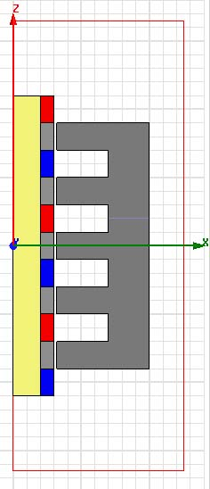
Рис. 4.5. Двумерная осесимметричная модель линейного однофазного электрогенератора с транслятором на аксиально намагниченных ПМ со стальными вставками для расчета магнитного потока методом конечных элементов в программе Ansoft Maxwell [1]. Шаг сетки 5 мм. Цилиндрический шток немагнитный. Статор и вставки между магнитами выполнены из стали (марка 1010 или Ст10). ПМ состава Nd-Fe-B имеют остаточную индукцию 1.15 Тл, коэрцитивную силу по намагниченности 850 кА/м, магнитную проницаемость 1.05.
Распределение магнитного поля в магнитной системе линейного электрогенератора с транслятором на аксиально намагниченных ПМ, разделенных стальными вставками, показано на рис. 4.6.
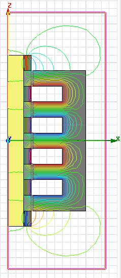
Рис. 4.6. Распределение магнитного поля в магнитной системе линейного электрогенератора с транслятором на аксиально намагниченных ПМ со стальными вставками на холостом ходу.
Магнитный поток в заданном сечении рассчитан с помощью калькулятора программы Ansoft Maxwell (Input - Quantity - B - Geometry - Line - Vector - Normal - Integral - RZ - Eval). Рассчитанное значение магнитного потока в кольцевом сечении внешнего ярма статора (R - R) 340.0 мкВб. За счет использования стальных вставок суммарный вес магнитов уменьшился вдвое, при этом магнитный поток увеличился примерно на 10 %.
5. Транслятор на ПМ с чередующимся направлением намагниченности (сборка Холбаха)
Расчет магнитного поля в магнитной системе линейного электрогенератора с транслятором на ПМ в виде сборки Холбаха [4] выполнен методом конечных элементов [1, 11] в приближении двумерной осесимметричной модели при отсутствии тока в обмотках (холостой ход). Расчетная модель электрогенератора показана на рис. 5.1, 5.2. Транслятор генератора состоит из центрального немагнитного штока, на который надеты кольцевые постоянные магниты. Типоразмер магнитов К30х20х10, материал – неодим-железо-бор, намагниченность по оси и по радиусу, остаточная индукция 1.15 Тл, коэрцитивная сила по намагниченности 850 кА/м [9], магнитная проницаемость 1.05. Магниты собраны в виде сборки Холбаха [4]. Направление намагниченности ПМ по оси и по радиусу чередуется. Статор сделан из стали. Воздушный зазор между транслятором и статором 1 мм. Магнитные свойства стали, использованные для расчета, показаны на рис. 3.3 (магнитные свойства аналогичны марке 1010 или Ст10).
Рис. 5.1. Схема линейного однофазного электрогенератора с транслятором на ПМ в виде сборки Холбаха для расчета магнитного потока. На цилиндрическом немагнитном штоке диаметром 20 мм с шагом 20 мм крепятся магнитные кольца типоразмера К30х20х10 (внешний диаметр 30 мм, диаметр отверстия 20 мм, высота 10 мм). Воздушный зазор между транслятором и статором 1 мм. Зубцы и пазы статора имеют ширину по 10 мм и расположены с шагом 20 мм. Магнитный поток рассчитывается во внешнем ярме статора (через кольцевое сечение R - R).
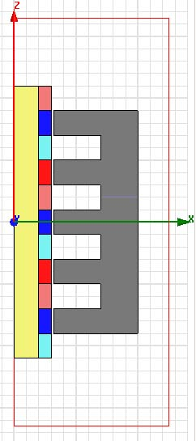
Рис. 5.2. Двумерная осесимметричная модель линейного однофазного электрогенератора с транслятором на ПМ в виде сборки Холбаха (чередование аксиально и радиально намагниченных ПМ) для расчета магнитного потока методом конечных элементов в программе Ansoft Maxwell [1]. Шаг сетки 5 мм. Цилиндрический шток немагнитный. Статор выполнен из стали (марка 1010 или Ст10). ПМ состава Nd-Fe-B имеют остаточную индукцию 1.15 Тл, коэрцитивную силу по намагниченности 850 кА/м, магнитную проницаемость 1.05.
Распределение магнитного поля в магнитной системе линейного электрогенератора с транслятором на ПМ в виде сборки Холбаха показано на рис. 5.3.
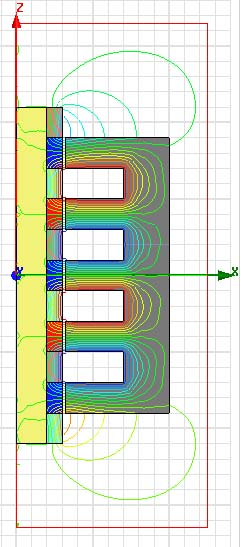
Рис. 5.3. Распределение магнитного поля в магнитной системе линейного электрогенератора с транслятором на ПМ в виде сборки Холбаха на холостом ходу.
Магнитный поток в заданном сечении рассчитан с помощью калькулятора программы Ansoft Maxwell (Input - Quantity - B - Geometry - Line - Vector - Normal - Integral - RZ - Eval). Рассчитанное значение магнитного потока в кольцевом сечении внешнего ярма статора (R - R) 400.3 мкВб. Таким образом, магнитный поток по прежнему меньше, чем для случая схемы с радиально намагниченными ПМ.
6. Выводы
Выполненные расчеты амплитудного значения магнитного потока, возбуждающего ЭДС в катушках электрогенератора, позволяют сделать предварительный вывод о большей эффективности схемы с радиальной ориентацией намагниченности ПМ транслятора линейного электрогенератора, несмотря на имеющиеся литературные данные [2, 6, 7]. В маломощных линейных электрогенераторах схема с аксиальным направлением намагниченности может быть выбрана по причине сложности изготовления сплошных кольцевых магнитов с радиальной намагниченностью. В мощных линейных электрогенераторах предпочтительна схема с радиальным направлением намагниченности ПМ, так как она обеспечивает более высокие электрические характеристики при меньших технологических затратах, связанных с изготовлением транслятора (монтаж магнитных сегментов на стальной трубе). Применение схемы линейного электрогенератора с транслятором на ПМ в виде сборки Холбаха [4] с чередующимися радиально и аксиально намагниченными ПМ не имеет преимуществ по сравнению со схемой с радиально намагниченными ПМ.
Ссылки:
06.02.2019
Альтернативные источники энергии
Компьютеры и
Интернет
Магнитные поля
Механотронные системы
Перспективные
разработки
Электроника и
технология